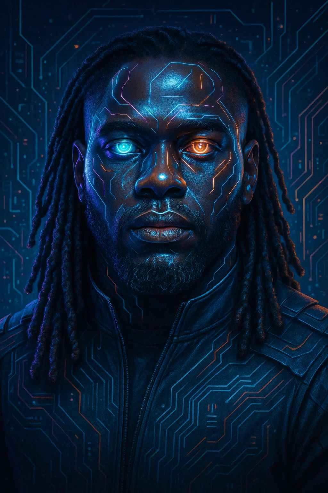

01 / THE HARNESS
BACKS AIOS Skills
The discipline travels. Portable skills, hooks and playbooks for agent runtimes.
Explore BACKS AIOS SkillsPRIVATE INTELLIGENCE. PUBLIC PROOF.
The machine comes down to meet you.
A private agentic AI operating system. Memory, models and an executive team working under one discipline—built by Truitt “Cuzzo.”
The system stays personal. The methods can travel.

The original landing film, in a silent web edition. Conceptual agent imagery, not a live status display. Native playback controls; no automatic motion.

Conceptual editorial illustration from the paper—not a live network map.
THE RESEARCH & ORIGIN STORY
A product review, a systems study and an architecture biography. From the first trust problem to the harness, memory, Executive Team and Wolf Pack that carry the work.
The story, the internals and the methods—together in one illustrated research record, with sources and acknowledgments.
Read the complete illustrated paperTHE PUBLIC COLLECTION
Read the source. Explore the methods. Make something of your own.
01 / THE HARNESS
The discipline travels. Portable skills, hooks and playbooks for agent runtimes.
Explore BACKS AIOS Skills02 / FINANCIAL WORK
A local-first trading-agent project. Start with its paper-trading workflow and read the operating boundaries.
Explore BUCKS03 / CODING & OPERATIONS
The public coding and operations agent. Bring your own model, memory and working environment.
Explore HydraAgent04 / VIDEO PRODUCTION
A video-production toolkit in the wider collection. This repository is a fork, not a BACKS-original system.
Fork · calesthio/OpenMontage upstream
Explore OpenMontagePublic repositories checked September 5, 2026. The private BACKS operating system is not distributed by this site. See the current GitHub collection.